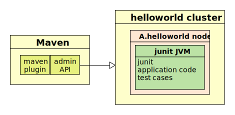

Cloud Software Group, Inc.
Cloud Software Group, Inc.Java fragment examples
- Codeline structure
- Basic build, junit test and install
- Adding additional files to the java fragment
- Java dependencies
- Code Coverage
Codeline structure
The recommended java codeline structure is :
Basic build, junit test and install
The following pom.xml will build, unit test and install to the local maven repository, a java fragment.
<?xml version="1.0" encoding="UTF-8"?>
<project xmlns="http://maven.apache.org/POM/4.0.0" xmlns:xsi="http://www.w3.org/2001/XMLSchema-instance" xsi:schemaLocation="http://maven.apache.org/POM/4.0.0 http://maven.apache.org/xsd/maven-4.0.0.xsd">
<!-- vim: set tabstop=4 softtabstop=0 expandtab shiftwidth=4 smarttab : -->
<modelVersion>4.0.0</modelVersion>
<groupId>com.tibco.ep</groupId>
<artifactId>jfrag</artifactId>
<packaging>ep-java-fragment</packaging>
<version>1.0.0</version>
<name>hello world</name>
<!-- common definitions for this version of StreamBase -->
<parent>
<groupId>com.tibco.ep.sb.parent</groupId>
<artifactId>ep-java-fragment</artifactId>
<version>10.4.0</version>
</parent>
</project>
When the maven install goal is called (mvn install), this pom.xml instructs maven to perform the following steps :
-
Uses install-product to check if the dependent product ( in this case com.tibco.ep.dtm:platform_linuxx86_64 ) is installed. If its not, maven will download the archive and the plugin will extract into $TIBCO_EP_HOME.
-
Uses the standard maven plugin maven-compiler-plugin:compile to compile the java sources to class files
-
Uses the standard maven plugin maven-compiler-plugin:testCompile to compile any java test sources to class files.
-
Uses start-nodes to start a test cluster.
Since this pom.xml has no configuration, a single node is started A.${artifactId} (ie A.helloworld in this example) with a random but unused discovery port. -
Uses test-java-fragment to launch junit on the cluster and report the test results. Should the test cases fail then no further processing occurs.
-
Uses stop-nodes to stop and remove the test nodes
-
Uses package-java-fragment to create a java fragment zip file in the build directory (by default, set to target) and attaches it to the build.
-
Uses the standard maven plugin maven-install-plugin:install to install the built and tested artifacts to the local maven repository.
The java fragment application code, test cases and junit are deployed to the test node :

Adding additional files to the java fragment
To add in any additional files, such as HOCON configurations or ast.properties files, add them into a resource directory (by default, maven sets this to src/main/resources) and they will be included in the fragment zip.
Java dependencies
If the project defines any java runtime dependencies, these jars are added into the java fragment zip file.
For example the following dependency in a pom.xml :
<dependencies>
....
<dependency>
<groupId>org.slf4j</groupId>
<artifactId>slf4j-api</artifactId>
<version>1.7.12</version>
</dependency>
....
</dependencies>
Will result in the zip file containing dependencies/java/org.slf4j-slf4j-api-1.7.12.jar. Any further transitive dependencies are also added.
Code Coverage
Java code coverage is not supported as of version 2.2.1.